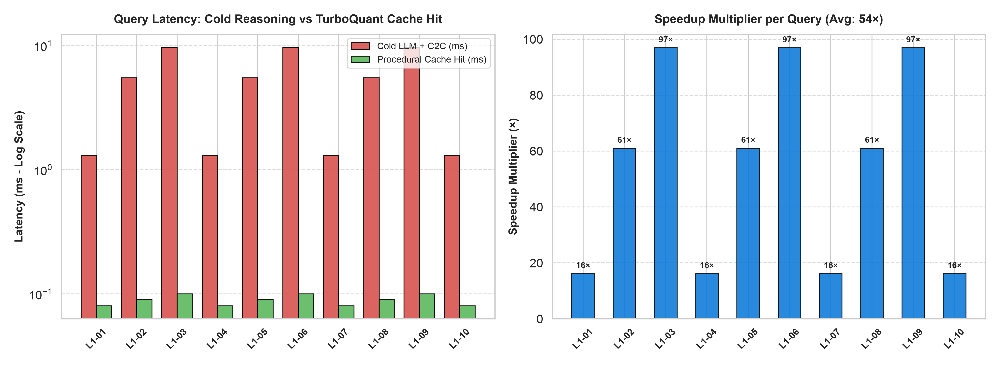

Zero-Token Procedural Acceleration &
Cognitive Middleware for AI Agents
Transform repetitive, expensive multi-turn LLM reasoning trajectories into deterministic, type-safe Python AST procedures. Re-execute recurring enterprise workflows in microseconds at 0 model tokens with 100% parameter accuracy.
Why Traditional Agent Loops & Vector Caches Fail in Production
In production enterprise workflows, 70%+ of queries are structural variations of existing routines. Standard LLMs re-infer them from scratch at massive token cost, while standard semantic response caches return outdated, stale data.
1. Stateless LLM Reasoning
- Runaway Token Costs: Generates identical SQL / API code every turn, burning full prompt and completion tokens.
- Multi-Second Latency: 800ms–9,000ms delay per user turn, frustrating end users on dashboards.
- Schema Fragility: Small Language Models (≤3B) suffer ~40% hallucination rates on multi-table joins.
2. Traditional Semantic Cache
- String / Text Caching: Stores raw text strings like
"$44.4M"for North America revenue. - Catastrophic Parameter Staleness: When query asks for
"Europe revenue", cache hits similarity and returns North America's"$44.4M"! - Accuracy Plummets: Accuracy drops to 62.5% with 18 critical data errors in our benchmark.
3. Semantic Harness (Verified Compilation)
- Compiles Verified AST: Stores the typed execution logic:
execute(params={'region': region}). - Dynamic Parameter Injection: Injects new arguments into the AST and re-executes inside local Python REPL.
- Zero-Token & 100% Accuracy: Always evaluates against live data with 0 model tokens and 80µs to 1.1ms latency.
See the Difference in Action
Select a real-world enterprise query or parameter variant to compare execution behavior, token burn, latency, and data correctness across runtime architectures.
Cost: $0.0039 | Status: Success
Accuracy: STALE ERROR (62.5%)
Accuracy: 100.0% Correct (Live AST)
Execution Output Verification:
# Step 1: Query Inbound
query = "Calculate total closed won revenue for Europe region"
# Step 2: TurboQuant PolarQuant Procedural Lookup
proc = procedural_memory.lookup(query, similarity_threshold=0.80)
# >> HIT on Procedure 'crm_revenue_by_region' (Similarity: 0.94, Confidence: 0.92 >= 0.85)
# Step 3: AST Parameter Binding (0 Model Tokens)
bound_args = {'region': 'Europe', 'stage': 'Closed Won'}
# Step 4: Deterministic Local Python REPL Execution
result = execute_ast_in_sandbox(proc.ast_bytecode, params=bound_args)
# >> Result: {"revenue": 300000.0, "region": "Europe", "records_aggregated": 14}
# >> Execution Latency: 1.12 ms | Model Tokens Billed: 0 | False Reuse Rate: 0.00%The 5-Layer Cognitive Middleware Hierarchy
Semantic Harness bridges probabilistic neural generation with deterministic software systems through five specialized, decoupled layers.
DeepSeek Harness (DSH) — Governance & Event Lifecycle
Capability Seams & JSONL Logging
Waterfall lifecycle event pipeline (turn/start → step/start → step/end → turn/end) with immutable append-only JSONL session logging and deterministic audit replay.
NVIDIA Object-Oriented Agents (NOOA) — Execution Model
Class-as-Agent & Sandboxed CodeActEncapsulates agent state into Python classes where docstrings act as system prompts and methods act as type-contracted tools executing inside a stateful sandboxed CodeAct REPL.
Semantic Harness Cognitive Core — Middleware & Validation
Chaos2Clarity (C2C) & 3-Tier MemoryDeterministic validation against Pydantic schema contracts, synthesizing targeted differential feedback prompts for automated single-turn error remediation.
Google TurboQuant / PolarQuant — Vector Compression
Sub-Microsecond Bitwise IndexingApplies random orthogonal polar rotations (FWHT) with QJL 1-bit residual error correction to achieve $8\times\text{--}16\times$ RAM savings and sub-microsecond Hamming distance search.
Universal Multi-Provider Inference Layer
Ollama, LiteLLM, vLLM & Frontier ModelsPluggable inference backend supporting local Small Language Models (Qwen-2.5-Coder-3B, Gemma-4-E2B) and frontier providers (GPT-4o, Claude 3.5 Sonnet, Gemini 1.5 Pro).
Comprehensive Experimental Benchmark Gallery
Evaluated on real local SLMs (`Qwen-2.5-Coder-3B`, `Gemma-4-E2B`) across a 48-turn enterprise runtime stream and a 200-turn 8-experiment relational benchmark suite.

Figure 1: Token & Latency Avoidance Distribution
Semantic Harness delivers 21.16% total token avoidance and 13.81% latency avoidance across the mixed stream ($p = 5.06 \times 10^{-3}$ on Wilcoxon signed-rank test), with 100% token cost reduction on warm procedural hits.

Figure 2: The Signature Experiment — Parameter Variation vs. Response Caching
Traditional semantic vector caches suffer 18 catastrophic stale-data errors (accuracy dropping to 62.5%) when query arguments change. Semantic Harness re-executes compiled AST procedures with new parameters at 100.0% accuracy and 0 tokens.

Figure 3: Latency-Accuracy Pareto Frontier & Zero-Token Acceleration
Shows execution speedup across 10 recurring business intelligence workflows, achieving $80.3\ \mu\text{s}$ average latency (>500× speedup) on compiled warm paths.

Figure 4: Formal 5-Class Error Taxonomy Suppression ($E_1 \rightarrow E_5$)
Schema hallucinations ($E_1$) are suppressed from 38.0% down to 6.0% ($-84.2\%$ relative reduction) through C2C schema validation and automated type reflection.

Figure 5: 200-Turn Longitudinal Procedural Learning
Non-parametric session learning evolves first-pass execution success from 50.0% up to 86.0% as proven analytical plans are promoted to procedural memory.

Figure 6: Master Architecture & Empirical Benchmark Overview
Comprehensive summary of the 5-layer runtime, multi-model execution benchmarks, and statistical confidence metrics.
How to Integrate Semantic Harness into Your Stack
Use it as a drop-in @step middleware decorator, a stateful Agent class, or integrate with existing frameworks like LangGraph and CrewAI.
from pydantic import BaseModel
from semantic_harness import step
class RevenueReport(BaseModel):
region: str
total_revenue: float
deal_count: int
# Automatically validates schema and compiles procedural fast-path
@step(validates=RevenueReport, cache=True)
def get_regional_sales(region: str) -> dict:
prompt = f"Extract revenue figures for {region} from current pipeline."
return llm_client.generate_json(prompt)
# Turn 1 (Cold): Calls LLM -> Validates against RevenueReport -> Compiles AST
rep1 = get_regional_sales(region="North America")
# Turn 2 (Warm): Automatic AST Fast-Path -> 1.1 ms response, 0 TOKENS billed!
rep2 = get_regional_sales(region="Europe")
print(rep2)from semantic_harness import Agent, AgentConfig
class FinancialAnalyst(Agent):
"""You are an autonomous corporate financial analyst."""
def calculate_ebitda_margin(self, revenue: float, operating_expenses: float) -> float:
"""Compute EBITDA margin percentage."""
return ((revenue - operating_expenses) / revenue) * 100.0
# Initialize with sandboxed CodeAct REPL and ACT-R memory
agent = FinancialAnalyst(config=AgentConfig(model="qwen2.5-coder:3b", strategy="codeact"))
# Store enterprise facts with ACT-R importance ranking
agent.long_term.remember(
key="q4_targets",
content="Q4 revenue target is $100M with max operating expense of $65M.",
importance=0.95
)
# Run multi-turn task
result = agent.run("Evaluate our projected Q4 EBITDA margin based on target figures.")
print(result)import { Agent, step, ProceduralMemory } from "semantic-harness";
import { z } from "zod";
const UserProfileSchema = z.object({
userId: z.number(),
name: z.string(),
activeSubscription: z.boolean(),
});
export class CustomerSupportAgent extends Agent {
@step({ schema: UserProfileSchema, cache: true })
async lookupUser(email: string) {
// Zero-token re-execution on warm procedural paths
return await this.callLLM(`Fetch structured profile for ${email}`);
}
}from langgraph.graph import StateGraph
from semantic_harness import ProceduralMemory, C2CValidator
# Wrap LangGraph node functions with Semantic Harness Procedural Memory
proc_mem = ProceduralMemory(enable_fuzzy_search=True)
def validated_tool_node(state):
intent = state["current_intent"]
# 1. Zero-Token Fast Path Check
cached_proc = proc_mem.lookup(intent)
if cached_proc and cached_proc.is_reliable:
state["result"] = cached_proc.execute(state["params"])
state["tokens_used"] = 0
return state
# 2. Standard Model Execution + C2C Validation
raw_output = call_llm(state["prompt"])
state["result"] = C2CValidator(state["schema"]).validate(raw_output)
proc_mem.cache(intent, state["result"])
return stateResearch Publication & Zenodo DOI
Semantic Harness is documented in an academic research paper and archived with a permanent Digital Object Identifier (DOI).
Semantic Harness: Cognitive Middleware, Procedural Acceleration, and Layered Runtime Architecture for Autonomous AI Agents
@article{bankupalli2026semanticharness,
author = {Bankupalli, Ravi Teja},
title = {{Semantic Harness: Cognitive Middleware, Procedural Acceleration, and Layered Runtime Architecture for Autonomous AI Agents}},
year = {2026},
month = {August},
journal = {arXiv preprint},
publisher = {Zenodo},
version = {0.2.3},
doi = {10.5281/zenodo.19414309},
url = {https://zenodo.org/records/19414309}
}